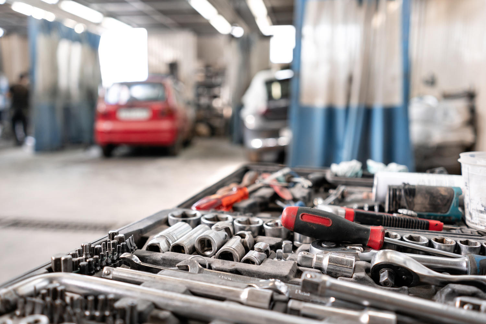
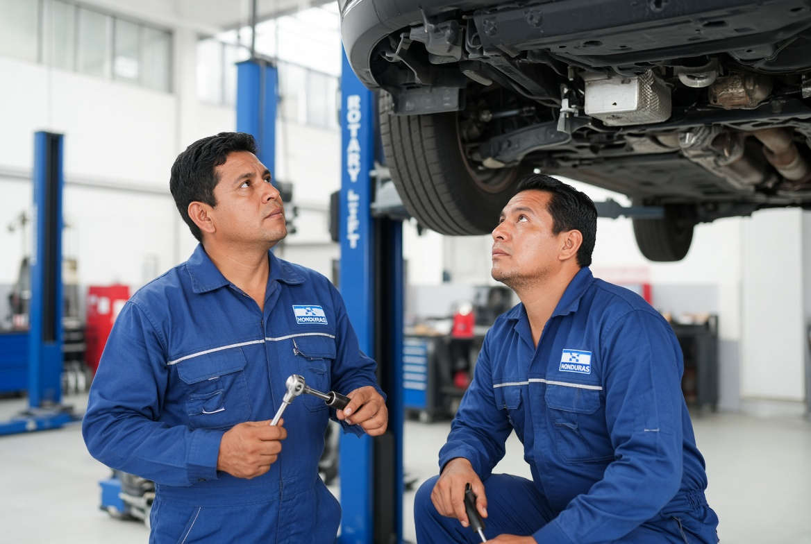
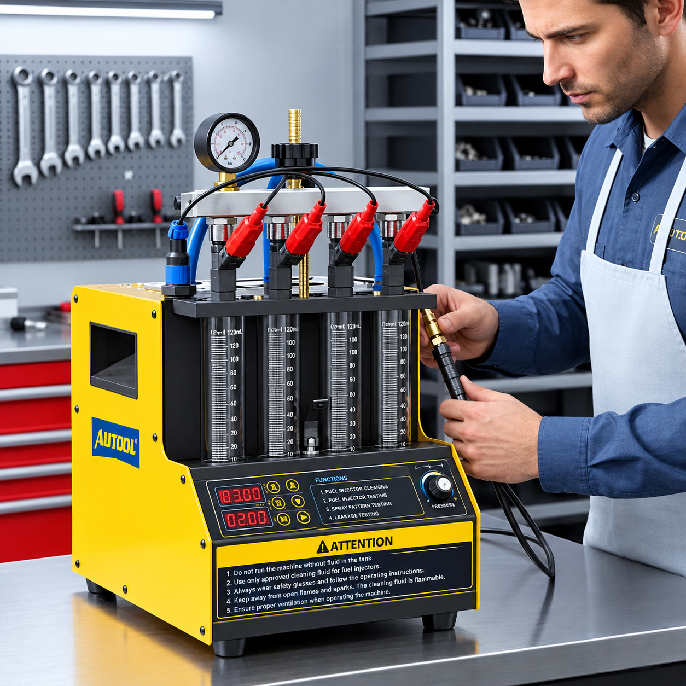
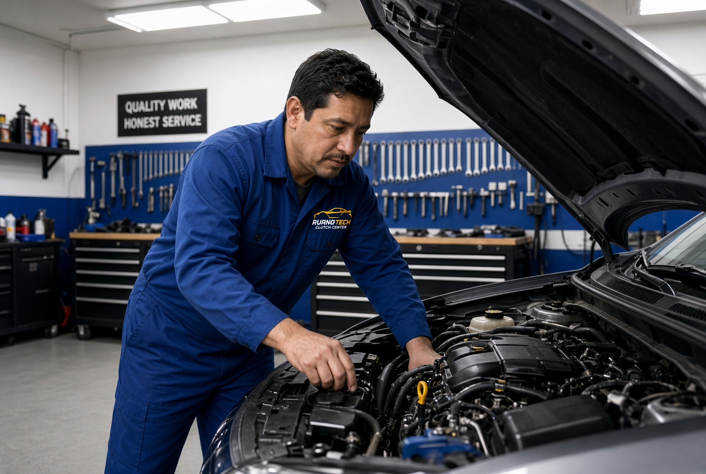
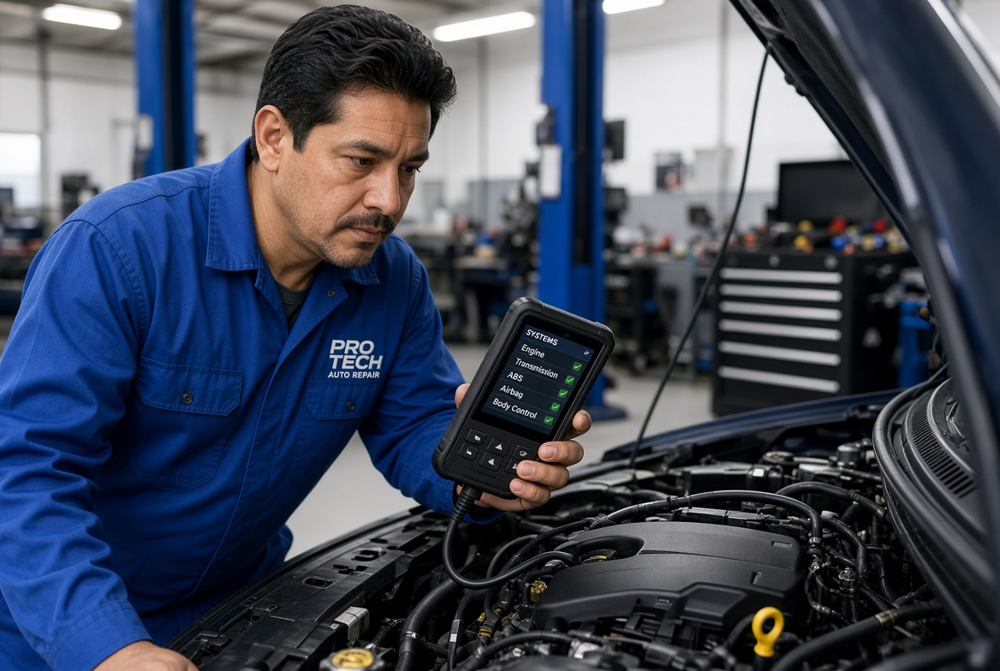
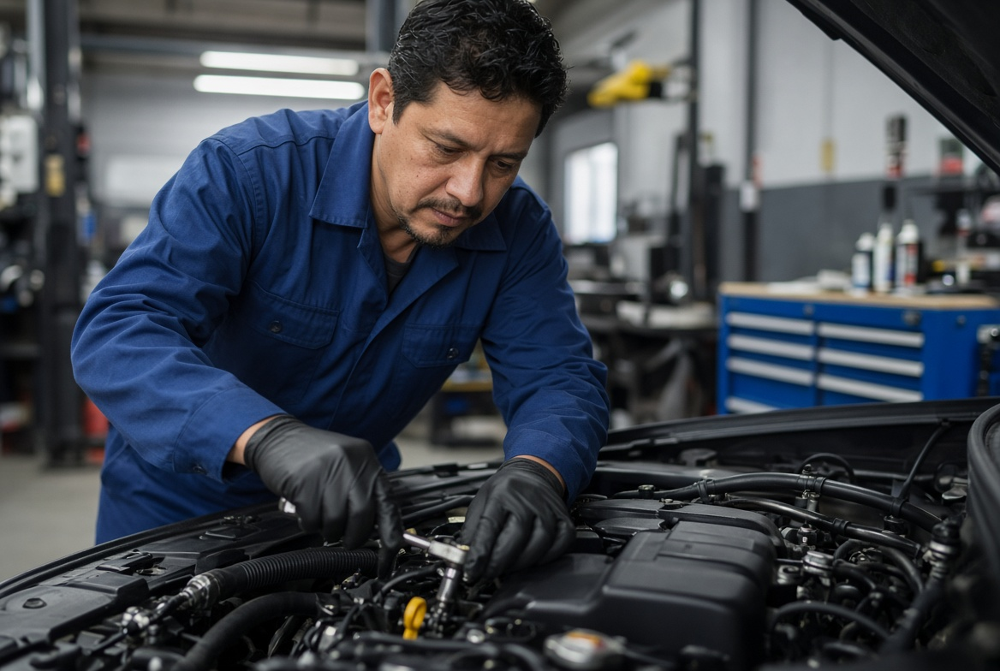

Soluciones completas para el cuidado de tu vehículo

Cambio de aceite, filtros, revisión de niveles, batería, luces y chequeo general. Evita problemas mayores con revisiones a tiempo.

Revisión y reparación de frenos, pastillas, discos, amortiguadores y sistema de suspensión. Diagnóstico confiable y mano de obra profesional.

Servicio rápido y garantizado. Menos consumo de combustible, más potencia y mejor rendimiento del motor.

Recupera la fuerza y el ahorro de combustible. Ideal cuando sientes pérdida de potencia o consumo elevado.

Identificamos fallas de manera precisa para darte la solución correcta desde el principio y evitar reparaciones innecesarias.

Sistema eléctrico, motor, transmisión básica, fugas y otros trabajos de mecánica automotriz con calidad garantizada.